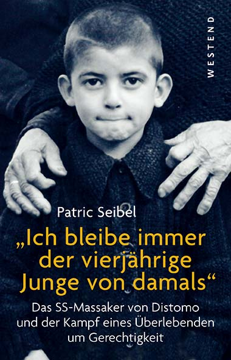

AK-Distomo
Start
|
Documenta 2017
”von Athen lernen? - an Distomo erinnern!”
Bericht von der Eröffnung am 9./10. Juni in Kassel
Am Tag der Eröffnung der Documenta 14 waren wir in Kassel, um am Tag dieses kulturellen
Großereignisses die Forderung der von Deutschland bis heute verweigerten
Entschädigungsansprüche für Opfer von Nazi-Kriegsverbrechen in den Fokus der öffentlichen Debatte
zu rücken. Hierfür bietet die Documenta 14, die unter dem Motto ”von Athen lernen” genügend
Anknüpfungspunkte. So fiel der Tag der Eröffnung auf den wichtigsten Gedenktag an die Opfer der
Naziherrschaft in Griechenland, dem Jahrestag des Massakers von Distomo. Gleichtzeitig ist der 10. Juni auch
Gedenktag an die Massaker in Lidice und Oradour.
Den Bock zum Gärtner gemacht: Entschädigungsverweigerer eröffnete Documenta
Die Eröffnungsrede hielt der neue Bundespräsident Frank-Walter Steinmeier am Kunstwerk
”die Blutmühle”, welche er - gelernt ist gelernt - zuvor feierlich gedreht hatte. In gewohnt
schwülstigen Worten beschwor Steinmeier den deutsch-griechischen Dialog, der dazu diene
”Gemeinsamkeiten zu finden”. Im Hinblick auf ein zukünftiges friedliches Miteinander scheint
es uns jedoch angebracht, auf die Unterschiede zwischen Deutschland und Griechenland hinzuweisen: Griechenland
hat Reparationsansprüche, während Deutschland Reparationsschulden hat. In Griechenland sind in
Folge der Besatzung mindestens 30.000 Zivilisten im Rahmen der ”Bandenbekämpfung” ermordet worden,
wohingegen zu keinem Zeitpunkt in der Geschichte deutsche Zivilisten von griechischen Soldaten ermordet
wurden. 58.000 griechische Jüdinnen und Juden wurden deportiert und ermordet - Auschwitz wurde
von Deutschen gebaut.
Der vollständige Bericht befindet sich
hier als Pdf-Dokument
|
Documenta 2017
”von Athen lernen? - an Distomo erinnern!”
Zur Eröffnung am 9./10. Juni in Kassel
Zu den folgenden gemeinsamen Aktivitäten laden wir ein:
9. Juni 2017, 19 Uhr (Philipp-Scheidemann-Haus, Holländische Straße 74, 34127 Kassel)
Filmvorführung ”EIN LIED FÜR ARGYRIS”
Vom Leben und Kampf des Argyris Sfountouris, der das Massaker am 10. Juni 1944 als knapp 4-Jähriger
überlebte und heute seinen Entschädigungsanspruch vollstreckt. Argyris Sfountouris wird
anwesend sein und nach der Vorführung mit uns sprechen.
10. Juni 2017, 10 Uhr Opernplatz Kassel
KUNDGEBUNG IN GEDENKEN AN DIE OPFER DES SS-MASSAKERS VON DISTOMO
Es spricht Argyris Sfountouris.
Das THEATERPROJEKT DISTOMO aus Berlin präsentiert Teile ihres dokumentarischen Theaterstücks über das Massaker von Distomo.
10. Juni 2017, 18:30 - 19:30 Uhr, ”Parlament der Körper” im Rahmen der documenta
Fridericianum, Friedrichsplatz 18, Kassel
Arbeitskreis Distomo mit Argyris N. Sfountouris und Margarita Tsomou
http://www.documenta14.de/de/calendar/22532/arbeitskreis-distomo
Am 10. Juni 2017 öffnet die 14. documenta in Kassel ihre Pforten. Begonnen hat sie am 8. April in Athen.
Das Motto dieser weltweit größten Ausstellung zeitgenössischer Kunst lautet ”Von Athen lernen”.
Doch was heißt das? Der künstlerische Leiter der documenta, Adam Szymczyk, will von Athen lernen, weil es die
”globale Situation und die ökonomischen, politischen, sozialen Dilemmata Europas verkörpert”.
Diese ”Dilemmata” haben eine Geschichte, die sich bis heute fortsetzt.
Der 10. Juni ist in Griechenland der wichtigste Gedenktag an die Opfer der Naziherrschaft.
Für uns - dem AK Distomo aus Hamburg, der Gruppe ”Deutschlands unbeglichene Schulden”
aus Berlin und der Kassler Griechenland-Solidaritätsgruppe - ist dieser Tag Anlass zu kulturpolitischer Intervention
am Tag der Eröffnung der documenta in Kassel.
Die Ankündigung
als Pdf-Dokument
und in griechischer Sprache
als Pdf-Dokument (griechisch)
|
Veranstaltung des AK-Distomo im Rahmen des Jour Fixe Gewerkschaftslinke HH
Mittwoch, 1. März 2017, 18.30 Uhr
Curiohaus, Rothenbaumchaussee 15, Hamburg
Ich bleibe immer der vierjährige Junge von damals
Das SS-Massaker von Distomo und der Kampf eines Überlebenden um Gerechtigkeit
- Argyris Sfountouris berichtet über seinen Kampf um Gerechtigkeit
- Patric Seibel trägt Auszüge aus seiner Biografie über Argyris Sfountouris vor
- Vertreter_innen des AK Distomo berichten über den Stand der politischen und juristischen
Auseinandersetzung in der Entschädigungsfrage. (Der AK Distomo setzt sich seit vielen
Jahren für die Entschädigung von NS-Opfern ein)
- Anschließend Diskussion

Argyris Sfountouris war noch nicht vier Jahre alt, als deutsche Soldaten während der
Besatzung Griechenlands am 10. Juni 1944 in seinem Heimatdorf Distomo seine Eltern und 216
andere Dorfbewohner jeden Alters und Geschlechts grauenhaft hinmetzelten. Er hatte großes
Glück, dass er überlebte.
Der Hamburger Autor Patric Seibel hat eine Biografie über Argyris Sfountouris verfasst,
die im Oktober 2016 im Westendverlag unter dem Titel ”Ich bleibe immer der
vierjährige Junge von damals” erschienen ist. Patric Seibel zeichnet darin ein einfühlsames
Portrait eines vielschichtigen Lebens. Argyris wird nach dem Krieg getrennt von seinen Schwestern, überlebt
zunächst in Waisenhäusern in Griechenland und gelangt schließlich in die Schweiz, wo er in
einem Kinderdorf für Kriegswaisen aus ganz Europa aufwächst. Er studiert, wird Physiker,
Lehrer, Entwicklungshelfer, Übersetzer und Autor. Argyris kämpft Ende der 60er und Anfang der
70er Jahre von der Schweiz aus gegen die Militärdiktatur in Griechenland.
Argyris Sfountouris ist unter anderem durch den Dokumentarfilm ”Ein Lied für Argyris” von Stefan
Haupt sowie durch einen Auftritt in der am 31. März 2015 im ZDF ausgestrahlten Satiresendung ”Die Anstalt”
zu einer international bekannten Persönlichkeit geworden. Zuletzt erschien sein Buch ”Schweigen ist meine
Muttersprache: Griechenland - seine Dichter, seine Zeitgeschichte.”
Immer wieder geht es ihm um Gerechtigkeit für die Hinterbliebenen von Distomo und um das Einfordern
deutscher Verantwortung. Argyris Sfountouris kämpft für eine wahrheitsgetreue Geschichtsschreibung
und für die Aufarbeitung deutscher Kriegsverbrechen in Griechenland. Seit über 20 Jahren setzt
er sich für eine Entschädigung der Opfer ein. Er klagte gemeinsam mit vielen Menschen aus Distomo
vor Gerichten in Deutschland und in Griechenland auf Entschädigungszahlungen. Mit der deutschen
Verweigerungshaltung in dieser Frage findet er sich bis heute nicht ab.
Unterstützer: GEW Hamburg, ver.di (Ortsverein Hamburg, Fachbereich 08), Westendverlag
Die Ankündigung
als Pdf-Dokument
|
1. Februar 2017, 20:00 Uhr, Polittbüro (Steindamm 45, 20099 Hamburg)
Hamburgpremiere
Distomo Unbeglichene Schuld(en)
Am 10. Juni 1944 überfällt eine deutsche SS-Einheit das griechische Dorf Distomo
und ermordet 218 Dorfbewohner*innen. Die Täter werden strafrechtlich nie verfolgt,
die umgerechnet 28 Millionen Euro an eingeklagten Entschädigungsansprüchen nie gezahlt.
Das Stück spannt den Bogen vom historischen Ereignis des Überfalls durch die
SS, über die hartnäckigen Zahlungsverweigerungen seitens Deutschlands bis zu den juristischen
Kämpfen der Überlebenden.
Verwendet werden Dokumente, die Zeugnis über die SS- und Wehrmachtsverbrechen in
Griechenland ablegen, Auskunft über deutsche Politik in Entschädigungsfragen
geben und den Verlauf der langwierigen Prozesse der Entschädigungskläger*innen
nachvollziehbar machen. Thematisiert wird außerdem der Umgang Deutschlands mit
den Tätern, die ohne Furcht vor Strafverfolgung leben konnten und sich bis in die
1980er Jahre ungehindert öffentlich versammeln durften.
Das Theaterstück richtet sich gegen diese Abwehrstrategien, erinnert an die Opfer
deutscher NS-Massaker und solidarisiert sich mit den finanziellen und politischen
Forderungen der Überlebenden.
Die Ankündigung
als Pdf-Dokument
|
|